Контрактные двигатели Volkswagen PASSAT
Контрактные двигатели для Volkswagen PASSAT — 21 шт. в наличии. В карточке указаны пробег, номер агрегата и OEM-номера: сверьте со своим или пришлите VIN, проверим за вас.
без фото
Контрактный двигатель Audi/Volkswagen A3/S3/EOS/GOLF/JETTA/PASSAT/SCIROCCO/TIGUAN 5N
2.0 л, 200 л.с., CAW/CAWB, пробег 82 000 км
цена по запросу
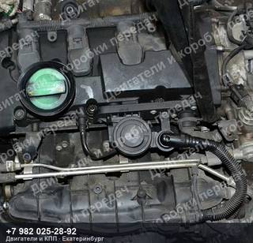
Контрактный двигатель Audi/Volkswagen A3/S3/TT/OCTAVIA/EOS/GOLF/PASSAT
2.0 л, 200 л.с., BWA, пробег 116 000 км
186 500 ₽

Контрактный двигатель Audi/Volkswagen A3/S3/TT/OCTAVIA/EOS/GOLF/PASSAT
2.0 л, 200 л.с., BWA, пробег 87 000 км
186 500 ₽
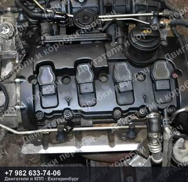
Контрактный двигатель Audi/Volkswagen A3/S3/TT/OCTAVIA/EOS/GOLF/PASSAT
2.0 л, 200 л.с., BWA, пробег 105 000 км
186 500 ₽
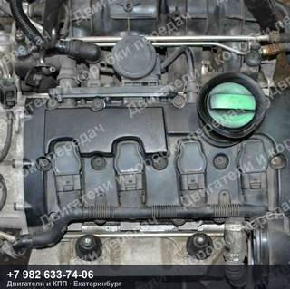
Контрактный двигатель Audi/Volkswagen A3/S3/TT/OCTAVIA/EOS/GOLF/PASSAT
2.0 л, 200 л.с., BWA, пробег 57 000 км
186 500 ₽
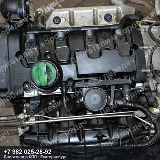
Контрактный двигатель Audi/Volkswagen A3/S3/TT/OCTAVIA/EOS/GOLF/PASSAT
2.0 л, 200 л.с., BWA, пробег 78 000 км
186 500 ₽
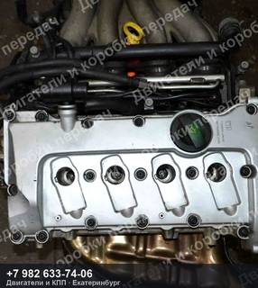
Контрактный двигатель Audi/Volkswagen A4/A6/PASSAT
2.0 л, 130 л.с., ALT, пробег 50 000 км
160 000 ₽
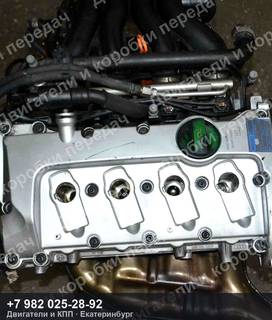
Контрактный двигатель Audi/Volkswagen A4/A6/PASSAT
2.0 л, 130 л.с., ALT, пробег 49 000 км
160 000 ₽
без фото
Контрактный двигатель Audi/Volkswagen A4/A6/PASSAT
2.0 л, 130 л.с., ALT, пробег 64 000 км
цена по запросу
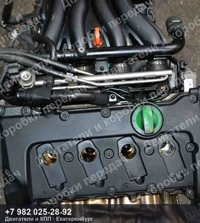
Контрактный двигатель Audi/Volkswagen A4/A6/PASSAT
2.0 л, 130 л.с., ALT, пробег 72 000 км
146 500 ₽
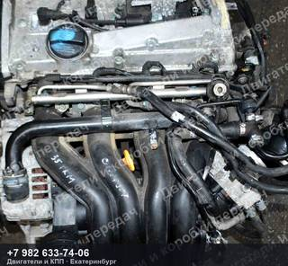
Контрактный двигатель Audi/Volkswagen A4/A6/PASSAT
125 л.с., APT, пробег 35 000 км
126 500 ₽
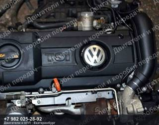
Контрактный двигатель Audi/Volkswagen/Skoda A3/OCTAVIA/SUPERB/YETI/GOLF/JETTA/PASSAT/SCIROCCO
1.4 л, 125 л.с., CAX/CAXA, номер 7DSG
106 500 ₽
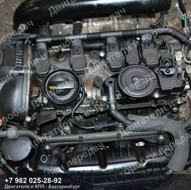
Контрактный двигатель Audi/Volkswagen/Skoda A3/S3/TT/OCTAVIA/SUPERB/YETI/GOLF/PASSAT 8P
1.8 л, 160 л.с., CDA/CDAA, пробег 86 000 км
332 500 ₽
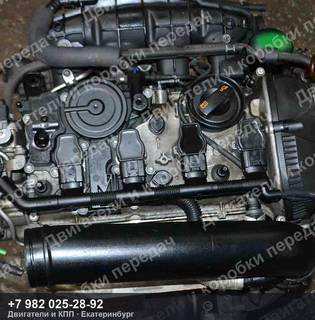
Контрактный двигатель Audi/Volkswagen/Skoda A3/S3/TT/OCTAVIA/SUPERB/YETI/GOLF/PASSAT 8P
1.8 л, 160 л.с., CDA/CDAA, пробег 102 000 км
332 500 ₽
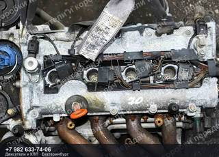
Контрактный двигатель Audi/Volkswagen/Skoda OCTAVIA/GOLF/JETTA/PASSAT/TOURAN 1Z3
1.6 л, 115 л.с., BLF, номер AT
62 500 ₽
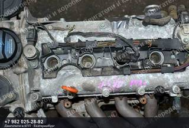
Контрактный двигатель Audi/Volkswagen/Skoda OCTAVIA/GOLF/JETTA/PASSAT/TOURAN 1K1
1.6 л, 115 л.с., BLF, пробег 102 000 км
62 500 ₽
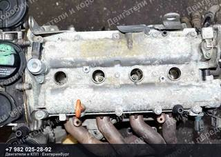
Контрактный двигатель Audi/Volkswagen/Skoda OCTAVIA/GOLF/JETTA/PASSAT/TOURAN
1.6 л, 115 л.с., BLF, номер AT
62 500 ₽
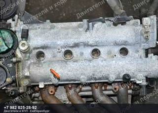
Контрактный двигатель Audi/Volkswagen/Skoda OCTAVIA/GOLF/JETTA/PASSAT/TOURAN
BLP, номер FSI
62 500 ₽
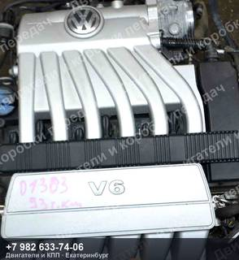
Контрактный двигатель Audi/Volkswagen/Skoda PASSAT
3.2 л, 250 л.с., AXZ, пробег 93 000 км
106 500 ₽
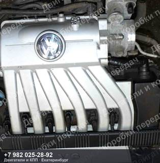
Контрактный двигатель Audi/Volkswagen/Skoda PASSAT
3.2 л, 250 л.с., AXZ
106 500 ₽

Контрактный двигатель Volkswagen PASSAT B5/3B
170 л.с., AZX, номер 5AT
57 000 ₽
Не нашли свой контрактный двигатель Volkswagen PASSAT?
Пришлите VIN или марку с моделью — проверим по складу и подберём то, что точно встанет на вашу машину. Ответим и подскажем, даже если у нас этого нет.